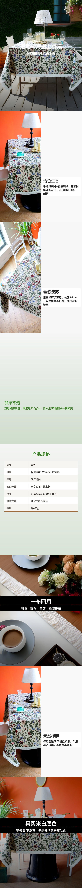

Workflow
先把从货源到上架素材的确定流程跑通。
同一个目标：把 B2B 货源链接转成可发布的 C 端商品素材。每一阶段都来自真实交付问题，而不是为了追逐架构名词。
早期页面能生成内容，但像模板；中期 Agent 会用工具，却容易半成品；多专职 Agent 让结构完整，但最终交付仍要围绕 artifact 做验证。SDK 阶段把这些经验沉淀成 playbook 和检查循环。
先把从货源到上架素材的确定流程跑通。
让 Agent 主动看货源、看图、调工具。
拆开研究、策略、文案、图片和质检职责。
围绕最终资产持续执行、验证和修正。
每个阶段先讲清 Agent 架构，再用真实 case 的字段、问题和图片资产做证据。重点不是“图片很多”，而是看清系统边界为什么一次次被重划。
这一阶段证明 AI 可以从货源生成标题、卖点、主图、详情图和属性，但产物仍然像固定模板。它解决的是“流程能不能跑通”，还没有解决“是否真正理解商品素材”。
把货源到上架素材的确定步骤串起来，形成第一个可复现闭环。
卖点泛化，图片叙事弱，主图和详情图缺少针对商品特征的取舍。
花瓶素材足够典型，可以看到固定流程在标题、卖点和图片组织上的模板感。
先证明系统能完整走完一条 listing 链路，再暴露出质量瓶颈。
货源素材差异需要动态判断，单靠固定 workflow 不够。
读取链接、基础图和商品属性，按固定字段进入流程。
标题、卖点、主图、详情图按预设步骤顺序生成。
每一步都有结果，但缺少对素材角色的动态判断。
需要人发现“能生成”和“能发布”之间的质量差距。
下一步不是多写几个 prompt，而是让 Agent 能看货源、判断素材，再决定要调用哪些工具。
5 张方图，展示这一阶段可生成但仍偏模板化的视觉结果。


11 张详情图完整展开，用来对照 workflow 阶段的表达密度和商品理解程度。


Agent 开始主动浏览货源、调用 VLM、生成背景、渲染图片和做合规检查。它获得了工具能力，但一个 Agent 同时负责研究、策略、文案、属性、图片和质检，交付仍然不稳。
系统能根据货源情况选择工具，不再只执行固定步骤。
正文为空、字段质量不均衡，工具调用能力没有自动变成稳定交付。
桌布 case 能看到工具增强后的视觉产物，也能看到内容字段没有被整体收口。
Agent 有了“看”和“做”的能力，开始动态处理不同货源。
需要把研究、策略、文案、图片和质检拆成更清楚的阶段合同。
一个 Agent 同时理解商品、规划卖点、生成文案和图片。
浏览、看图、背景生成、图片渲染和合规检查都接入同一循环。
视觉产物明显更具体，但字段完整性和最终收口不稳定。
出问题时很难判断是研究、策略、文案、图片还是质检没做好。
需要把“谁负责理解商品、谁负责文案、谁负责图片、谁负责质检”拆开。
5 张方图，展示单 Agent 调用工具后的可视化能力。
8 张详情图和长图资产，展示“有工具但没完全收口”的阶段状态。


这一版已经能产出完整长图，但仍需要后续阶段把内容完整性和最终检查做成稳定机制。

商品理解、竞品、关键词、策略、文案、属性、图片规划和质检被拆成专职阶段，产物结构明显更完整。但规划正确不代表最终图片一定可发布，Judge 高分也可能漏掉 artifact 层面的硬伤。
职责边界更清楚，正文、卖点证据、主图布局和详情图数量更稳定。
系统能规划，也能分工，但还不能稳定保证最终资产达标。
小夜灯 case 展示了专职 Agent 之后更完整的图片与文案结构。
把复杂任务拆成可观察、可检查、可替换的多个职责阶段。
需要围绕最终文件反复执行、验证和修正，而不是只做阶段产出。
先抽取商品事实、场景、材质、尺寸和人群。
把商品事实变成标题、卖点、属性和详情页话术。
拆分主图、详情图的信息任务，生成更完整的视觉结构。
检查阶段产物，但仍可能漏掉最终 artifact 的硬伤。
需要一个围绕最终交付物工作的执行 harness，把检查、修正和文件上下文纳入循环。
5 张方图，体现多专职 Agent 后更完整的视觉规划。


8 张详情图，展示职责拆分后更完整的商品卖点展开。


SDK 阶段不再继续堆角色，而是把业务经验写成 skill/playbook，让 Agent loop 围绕最终资产执行、检查、修正和交付。公开展示只放已确认的桌布 HTML demo，不再列多个 SDK 候选。
把长任务执行、文件上下文和验证循环交给成熟 harness。
标题、属性、5 张主图、8 屏详情图和详情长图。
桌布 demo 是已经确认的最终展示素材，适合代表 SDK 版的公开交付形态。
工具层保持薄封装，复杂判断沉淀到 playbook 和执行循环。
这是可复核、可发布、可讲解的一套 listing package。
把上架规则、图片标准和质检经验沉淀成可复用 skill。
围绕目标资产持续执行、读取文件、调用工具和修正结果。
不只看中间 JSON，也检查最终 HTML、图片和详情长图。
输出一套能被打开、复核、讲解和继续迭代的 listing package。
它能代表当前阶段的核心能力：围绕最终资产执行、验证、修正并交付。
5 张最终主图，代表当前可公开展示的 SDK 交付效果。


8 屏详情图完整展示，和最终 demo 使用同一组静态资产。


Workflow、单 Agent、多 Agent、Claude Agent SDK 不是谁天然更高级。它们分别对应不同问题：先跑通闭环，再获得工具能力，再拆清职责，最后补齐围绕最终交付物的验证和修正循环。